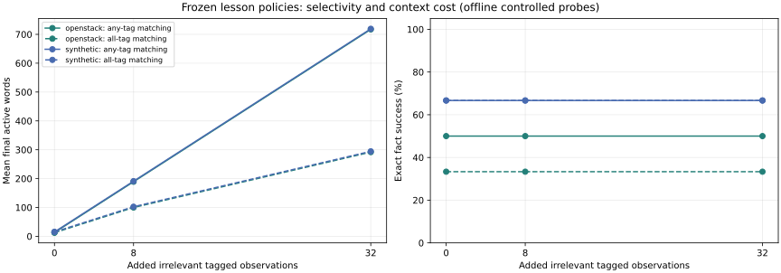

This contribution isolates lesson-store changes under a shared seven-word compressor, then measures rule selectivity under irrelevant tagged noise.

Status: complete.
| Dataset | Condition | Successes / cases | Final words | Peak words | Step-sum words |
|---|---|---|---|---|---|
| openstack | empty_store | 3/12 (25.0%) | 21.2 | 48.1 | 303.8 |
| openstack | full_context | 7/12 (58.3%) | 200.1 | 200.1 | 1951.2 |
| openstack | openstack_transfer | 7/12 (58.3%) | 41.7 | 52.4 | 590.8 |
| openstack | synthetic_transfer | 8/12 (66.7%) | 116.4 | 117.8 | 1145.7 |
| synthetic_incident | empty_store | 4/12 (33.3%) | 29.3 | 39.0 | 309.1 |
| synthetic_incident | full_context | 11/12 (91.7%) | 131.1 | 131.1 | 985.6 |
| synthetic_incident | openstack_transfer | 8/12 (66.7%) | 35.2 | 41.8 | 367.6 |
| synthetic_incident | synthetic_transfer | 10/12 (83.3%) | 51.9 | 55.8 | 547.8 |
Analysis uses only cases with all four conditions completed. Partial records remain saved and counted.
2592 deterministic episode records; zero model calls. Three source seeds, 144 base cases and three noise levels.
| Policy | Added noise | Success | Final words | Irrelevant items kept verbatim |
|---|---|---|---|---|
| empty_store | 0 | 16.7% | 11.8 | 0.0 |
| empty_store | 8 | 16.7% | 99.2 | 1.7 |
| empty_store | 32 | 16.7% | 291.2 | 1.7 |
| full_context | 0 | 100.0% | 175.7 | 0.0 |
| full_context | 8 | 100.0% | 351.7 | 8.0 |
| full_context | 32 | 100.0% | 879.7 | 32.0 |
| openstack_all | 0 | 33.3% | 12.5 | 0.0 |
| openstack_all | 8 | 33.3% | 99.8 | 1.7 |
| openstack_all | 32 | 33.3% | 291.8 | 1.7 |
| openstack_any | 0 | 50.0% | 13.2 | 0.0 |
| openstack_any | 8 | 50.0% | 189.2 | 8.0 |
| openstack_any | 32 | 50.0% | 717.2 | 32.0 |
| synthetic_all | 0 | 66.7% | 15.2 | 0.0 |
| synthetic_all | 8 | 66.7% | 102.5 | 1.7 |
| synthetic_all | 32 | 66.7% | 294.5 | 1.7 |
| synthetic_any | 0 | 66.7% | 15.2 | 0.0 |
| synthetic_any | 8 | 66.7% | 191.2 | 8.0 |
| synthetic_any | 32 | 66.7% | 719.2 | 32.0 |
Hand-authored semantic fixtures diagnose grading behavior. They are not estimates of real-world grader accuracy.
| Fixture | Intended success | Grader success | Agreement |
|---|---|---|---|
| affirmed_constraint | 1 | 1 | True |
| negated_forbidden | 1 | 1 | True |
| actual_violation | 0 | 0 | True |
| post_nominal_negation | 1 | 0 | False |
| pre_nominal_negation | 1 | 1 | True |
| unrelated_negation | 1 | 0 | False |
| negated_synonym | 0 | 1 | False |
| dismissed_alternative | 1 | 0 | False |
• OpenStack source: one transferable compression rule with support 13; two candidates are excluded. Controlled synthetic source: three transferable rules, each with support 8.
• Source policies differ in tag coverage and rule count; this is a comparison of complete policies.
• Current any-tag matching and experimental all-tags matching share every other setting. Production retrieval is unchanged.
• Final/peak words include observation IDs. Step-sum words is the sum of active words after observation-management steps, not billed tokens.
• Provider token usage is reported separately for investigation and task requests. Shared preprocessing and prompt-cache reuse are explicit; cache hits are not independent samples.
• OpenStack raw lines are preserved exactly and tagged once; synthetic incidents use predefined observations. Grading metadata is excluded from task prompts.
• No tuning after outcomes, no new training, and no statistical or production-generalization claim. OpenStack includes authored constraints/additions; synthetic probes share existing templates.
Run python -m src.experiments.run_openstack_lesson_study --hosted --key-file /tmp/ecm-study-qgenie.key --plots.
Source hashes, frozen inputs/stores, full ledgers, provider calls and verifier output accompany this report.